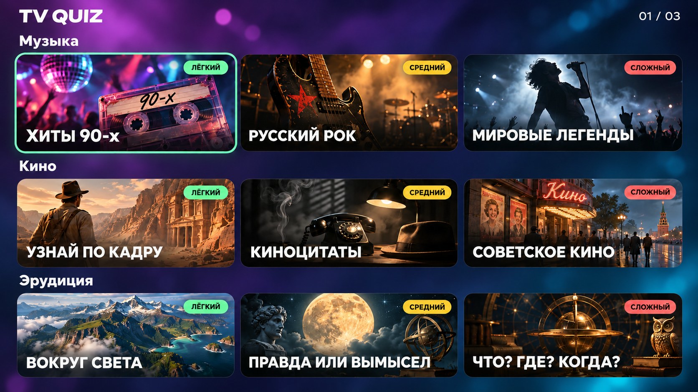
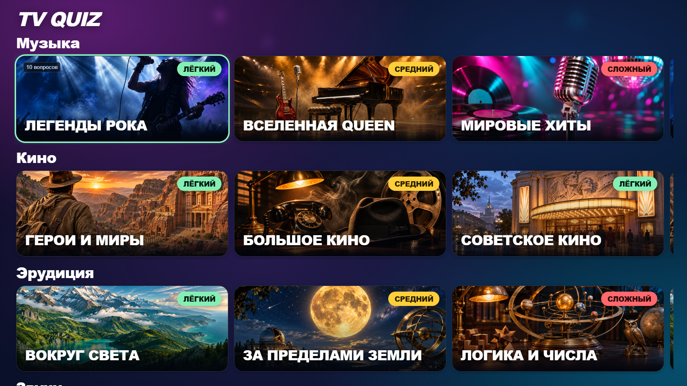

Сохранены три ряда, широкие обложки, компактная шапка, уровень сверху справа, зелёный фокус и отдельный фиолетово-синий фон. Названия отражают реальные подборки из банка. Демонстрационные названия и фиктивный счётчик страниц не перенесены. Обложки — отдельные иллюстрации, а не кадры игровых медиавопросов.